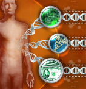
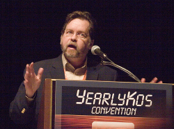

El joven en el carro del año lo describió como la más reciente y estupenda consola de videojuegos; el anciano que plácidamente dirigía su burro creyó que le hablaba en algún idioma extraño porque si dijo algo no alcancé a escucharlo y, curiosamente, más de una docena de señoras aseguró que se trataba de la marca de una nueva nevera. Entre los más enterados, descubrí reticencia a conocer más o, sencillamente, una cantidad enorme de errores en su alcance del concepto. Para aquella encuesta personal, aproveché un recorrido por el campo, pregunté a compañeros de trabajo, guardianes en distintos lugares y a varios policías de tránsito, casi todos dominicanos. Las respuestas fueron más que desoladoras.
Cuando el genoma humano fue secuenciado en su totalidad en el 2003, mis expectativas eran altas. Y no hablo en el ámbito científico, por supuesto, ya que aquellas siguen siendo más que obvias, sino en el área del conocimiento general, específicamente en la reacción del público. Imaginaba, con ingenuo optimismo, que aquellas evidencias serían más que suficientes. “Ahora está demostrado. Ya no pueden decir nada más, ni negar los fósiles de transición, Darwin tenía tanta razón que dan ganas de llorar”, rumiaba entusiasmada mientras formulaba planes para que la noticia saliera en la primera plana del periódico en el que entonces trabajaba.
Siete años han pasado desde aquel espectacular evento para la medicina y la ciencia en general, y muchos otros genomas han sido secuenciados, pero su impacto en el público deja mucho que desear, probablemente porque la mayoría todavía desconoce de qué se trata. Mediante la promoción de la ignorancia, gobernantes sin ética siembran en el pueblo semillas de obediencia que germinan en el desconocimiento, un terreno que muchas iglesias conocen bien. Es gracias a todos ellos, dirigentes y religiosos, que la mayoría de mis encuestados desconoce lo que es el genoma.
La semana pasada, Pakistán censuraba a YouTube y miles protestaban pidiendo el cierre de redes sociales como Facebook. Los más radicales afirmaban que criarían a sus hijos para que murieran por el Islam, una amenaza tanto para los que no pensamos como ellos, creyentes o no, como para su ya condenada descendencia que morirá sin haber vivido. La censura es la posición a tomar; evidentemente, le temen al conocimiento. Con videos como los de Pat Condell circulando libremente en YouTube es más seguro prohibir; imposible exponer a los jóvenes a ideas racionales y mucho menos permitir que perciban opciones lógicas, eso jamás. Por eso el adoctrinamiento debe comenzar temprano y así convertir a los niños en soldados religiosos y a la niñas en objetos que hay que cubrir hasta que algún hombre requiera de ellas.
En los campos de mi país el problema, aunque menos violento, navega por los mismos océanos de ignorancia; nadie conoce a Darwin pero sí a Jesús. No tengo ningún problema en que sepan del segundo, pero comprender las ideas del primero es mucho más importante para el progreso en general. No es recomendable olvidar que el desconocimiento en la población de cualquier país contribuye a su atraso. Continuamos negándole a la especie su enorme potencial que es completamente desperdiciado cuando futuras mujeres de la ciencia son malgastadas en una vida de ignorancia y embarazos tempranos potenciados por la insensatez religiosa y la indiferencia política; hombres que pudieron haber estado desarrollando programas de inteligencia artificial, pierden la vida sobre burros porque nadie se interesó en ofrecerles las maravillas que conocemos sobre el mundo y brindarles un lugar donde pulir sus habilidades intelectuales. Por el contrario, las ideas que poseen más allá de sus narices provienen de la televisión, y ante esa catástrofe hay poco que agregar.

La educación puede acabar con muchos de los males humanos, desde la salud hasta lo social. En un estudio publicado en el diario Neurología, investigadores explicaban que la educación ejerce un efecto protector en el cerebro. “Esto no quiere decir que la educación reduce los cambios asociados con enfermedades o con el envejecimiento pero sí permite que los individuos más educados resistan la influencia del deterioro de las estructuras cerebrales al mantener mejores sus funciones cognitiva y conductual”, expresó C. Edgard Coffey, director del Departamento de Psiquiatría del Sistema para la Salud Henry Ford, en Estados Unidos. Estudios similares han encontrado una relación directa entre la educación y el Alzheimer, donde personas más educadas tienden a padecer menos los efectos desastrosos de la enfermedad.
No sólo eso. Un estudio a gran escala realizado en profesores por científicos de la Universidad de Bristol en el Reino Unido, descubrió que un 87% de los educadores encuestados concordaba en que el estudio de las neurociencias es esencial a la hora de educar y de elaborar modelos educativos. Desafortunadamente, programas que confunden la pseudociencia con la ciencia han dificultado el progreso en esa área. Más aún, la mayoría de los países está aún muy lejos de entrenar a sus maestros en los avances de las neurociencias sobre la forma de enseñar.
Problemas similares han enfrentado la investigación y la implementación de programas educativos basados en investigaciones científicas corroboradas ya que elementos que explotan exageraciones y malentendidos teóricos obstaculizan una educación temprana seria y fomentan una visión simplista de nuestra forma de aprender.
Un estudio a largo plazo, por ejemplo, confirmó que una educación sistematizada desde temprana edad ofrece consistencia en el estudio por lo menos hasta los 21 años de edad. La investigación inició en el año 1972 con 111 infantes, todos de familias pobres; 57 fueron asignados a una educación de alta calidad que incluía actividades individualizadas diseñadas para promover el desarrollo social, emocional e intelectual de cada niño. Los otros 54 fueron divididos en distintos programas regulares de cuidado preescolar. La investigación fue efectuada por la Universidad de Carolina del Norte y el proyecto fue dirigido por el doctor en psicología Craig Ramey.
¿Valió de algo el esfuerzo extra con estos niños? Definitivamente. Entre los que recibieron el arranque superior en preescolar, 35% fue a la universidad, en comparación con 14% en el grupo control. No sólo eso, la calidad educativa también retrasó el tiempo en que las jovencitas quedaban embarazadas. Y sólo estamos hablando de implementación a nivel preescolar, imaginemos entonces lo que se puede lograr si el esfuerzo se efectúa en todos los grados escolares. Si mantenemos un individuo en la escuela y luego en la universidad, disminuimos las probabilidades de que se dedique a la delincuencia a la vez que incrementamos la posibilidad de que produzca algo valioso.
Es difícil mantenerse optimista ante el estado actual de la educación en numerosas sociedades. Cualquier niño, no importa su nivel de pobreza, debería por derecho recibir la información apropiada sobre el mundo; un salón de clases es el hogar del conocimiento, no de la espiritualidad; es un sitio para pensar, no para rezar, las iglesias están para eso. Es la idea, pero como bien sabemos, la realidad es diferente por estos lados.
A pesar del desastre a mi alrededor, noto optimismo por parte de jóvenes que transmiten una emoción respecto al conocimiento sobre el Universo parecida a la que encuentras en los escritos de Carl Sagan. El sentimiento emprendedor de estos ateos optimistas espero impulse una ola que favorezca el pensamiento racional y promueva la educación seria basada en conocidos modelos científicos. Ahora bien, una posición realista respecto a la situación actual no es admitir derrota, simplemente es reconocer que en muchos lugares ni siquiera hay un camino hecho por donde dar el primer paso y también temer que las cosas den un giro para lo peor, como lo han hecho tantas otras veces. No obstante, conocer esas voces que confían en nuestra empatía y esperan que al final actuaremos guiados por la ética, es finalmente soñar en que conseguiremos lustrar a los que valen, pues por cada Pat Robertson en el mundo deben de haber por lo menos diez Francis Crick y por cada Sarah Palin una decena de Simone de Beauvoir. El trabajo consiste en pavimentarles el camino para que esos cerebros se dediquen a pensar en vez de vivir de rodillas y morir sobreviviendo.
Sin educación nunca conseguiremos mejorar como especie, mucho menos erradicar los demás problemas del planeta: primero hay que aprender a pensar para poder desarrollar cómo y, mientras más personas piensen, mayores serán las posibilidades de que generemos soluciones prácticas para resolver nuestras dificultades.
Y, evidentemente, que nunca más al hablar de genomas, alguien piense en neveras.
La polémica copia de una bacteria procariótica moderna
Jugando a ser Dios

Para aquellos que piensan que el genoma es un tipo de refrigerador, la noticia sobre la hazaña en los laboratorios de Craig Venter posee matices imposibles de concebir. Venter y su equipo lograron copiar artificialmente un millón de unidades de largo del genoma de una bacteria para luego introducirlo en la célula y hacerlo funcionar. Se trata de la creación de la copia de un genoma existente, por lo tanto, la novedad radica en la posibilidad de hacerlo no en la creación de algo original. No es lo mismo clonar una vaca que producir una especie genéticamente desconocida y nueva sobre el planeta; no obstante, el hecho de que no hemos logrado la segunda opción no le resta mérito a la primera. Aunque los científicos no hayan creado un genoma nuevo, sí es sumamente importante el experimento ya que han conseguido que este ADN artificial se instale en la célula y funcione, creando las proteínas para mantener al organismo vivo. Venter ha sentado las bases para producir en el futuro un genoma único creado por los humanos.
“Craig no ha creado vida original, sólo la ha imitado. Se trata de un avance en cantidad, no en calidad”, dijo para The New York Times el genetista de la Universidad Tecnológica de California, Caltech, David Baltimore.
Aún así, las voces religiosas y creacionistas han emitido sus sentencias respecto a la hazaña de Venter. Mientras los científicos debaten sobre el lugar que esta investigación debe tener para la ciencia, teólogos y creacionistas proclaman que otra vez, los investigadores están jugando a ser dios.
“El ruido sobre jugando a ser dios nos aburrirá por un buen rato, de eso estoy seguro”, escribió en su blog Pharyngula el biólogo de la Universidad de Minnesota, PZ Myers. “Es una posición que carece de sentido. Si lo que han hecho es jugar a ser Dios, entonces dios es bioquímica y biología molecular y los procesos naturales de la física. Hemos estado jugando a ser dios cada vez que cocinamos, o pintamos, o tejemos, o escribimos, o creamos. No es una violación del orden natural, es simplemente hacer lo que los humanos siempre hacemos. Aparentemente, ser humano es lo mismo que ser dios”.
Otra queja clásica equipara cualquier avance científico con maldad y destrucción. La idea, al parecer, es silenciar el conocimiento sólo por el uso que se le podría dar en el futuro. “Imagínate todo el mal que se puede hacer con eso”, expresa una amiga preocupada.
Pues vislumbra primero todo el mal que se puede hacer con cualquier cosa, hasta con un rumor. Nuestra especie es fácilmente tentada por los corolarios del dinero y el poder; pero una cosa es la ciencia y otra son los científicos. La primera es el libro abierto de todo el conocimiento acumulado y corroborado por siglos de aplicaciones e investigaciones, los segundos son los que muchas veces añaden y confirman teorías válidas y duraderas a dicho libro y otras veces no.

La ciencia como un arma para el mal es una excusa manida y torpe que se cae por su propio peso ya que por cada bomba atómica hay cientos de investigaciones positivas sobre la energía que han conseguido brindar beneficios significativos al planeta y sus habitantes; por cada amenaza de bioterror, hay miles de millones de niños salvos gracias a las vacunas; por cada pieza de tecnología que ayuda a matar a inocentes en guerras, hay un sinnúmero de dispositivos para salvar a miles de millones por todo el mundo y para continuar con la importante exploración espacial.
La ciencia malvada no existe, sólo humanos de poca ética.
Volver al índice de la Lupa Herética
© 2008-2021 Glenys Álvarez y Sin Dioses. Prohibida la reproducción con fines comerciales.
Comentarios
Comments powered by Disqus